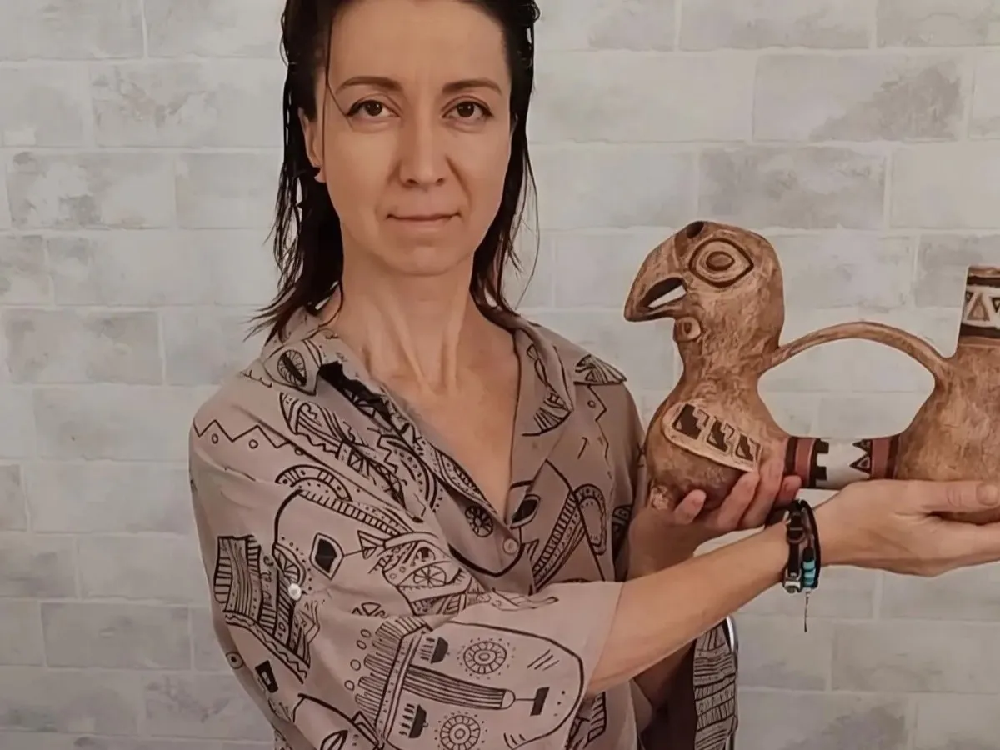
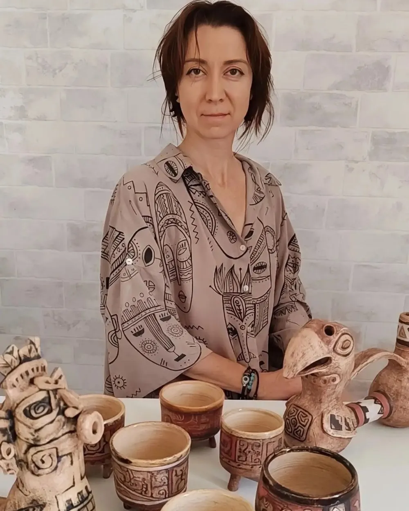
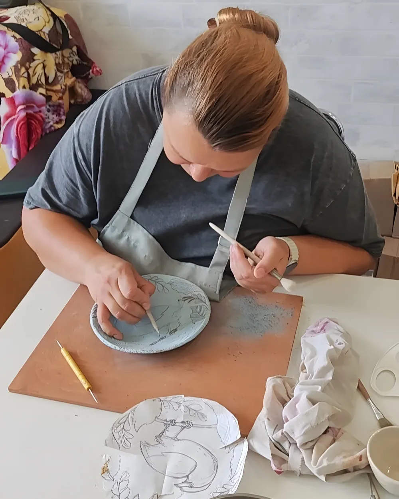

Алёна Бударова · Краснодар
Керамика, которую делали до нас
Триподы майя для какао, сосуды со мхом, зеркала в керамической раме. Каждая вещь в одном экземпляре — второй такой не будет.
У чая своя чашка, у эспрессо своя. А у какао своей посуды не осталось.
Майя и ацтеки пили какао из чаш на трёх ножках — и считали бобы физическим проявлением Кетцалькоатля, бога мудрости. Я возвращаю напитку его посуду.

Триподы
Посуда для напитка богов
Бобы мололи, разводили холодной водой и взбивали до пены. Полихромные чаши на трёх ножках были роскошью — их ставили на пирах и в ритуалах. Объёмы 200 и 400 мл.
Смотреть триподы →
Мхариумы
Керамика и мох
Сосуд, в котором живёт мох — живой или стабилизированный. Один и тот же мхариум работает подсвечником, курительницей и ёмкостью для украшений. Многофункциональный индеец.
Смотреть мхариумы →
Интерьер
Зеркала, подсвечники, горшки
Рама собирается из отдельных плиток: ягуар, волна, листья — рисунок процарапан по сырой глине. Такие вещи делаются в одном экземпляре и обычно уезжают сразу.
Смотреть интерьер →
Под заказ
Приносите идею — сделаю
Половина работ рождается из чужой задумки: присылают референс, фотографию из музея, набросок или просто рассказывают, что хочется. Дальше обсуждаем форму, роспись и размер — и я леплю.
Так появились и уаскос — свистящие сосуды инков. Индейцы верили, что их звук соединяет физический и духовный миры.
Обсудить заказ →Свежее из печи
Из последнего обжига
Обновляю раздел после каждого обжига.
Что уехало — уберу, что вышло из печи — добавлю.



О мастере
Алёна Бударова
«Совершенству в керамике нет предела»
Художник-керамист из Краснодара. Основала изостудию «Кисть и Перо», где ведёт занятия для детей и взрослых. Керамика — отдельная линия работы: триподы, мхариумы, зеркала, посуда.
Прийти на занятие
Встречи
Мастер-классы и какао-церемонии
Занятия по керамике в студии «Кисть и Перо» в Краснодаре и какао-церемонии, где триподы делают то, ради чего их придумали.
- Мастер-классы для детей и взрослых — в студии
- Какао-церемонии с авторскими триподами
- Даты и запись — в Telegram и MAX
Связь
Напишите — договоримся
Отправляю Почтой России, СДЭК и Ozon. Доставка не входит в стоимость и оплачивается отдельно. Самовывоз в Краснодаре — по договорённости.